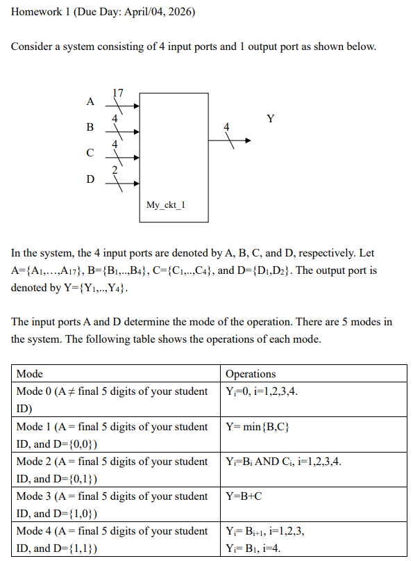

期中考
1. 英文/術語
- 3-input NOR gate：3 輸入 NOR 閘
- algorithmic state machine (ASM) chart：演算法狀態機圖；常簡稱 ASM 圖
- case statement：case 敘述、case 陳述
- component：元件
- D-type FF / D-type flip-flop：D 型正反器
- declared：宣告
- declared explicitly：明確宣告
- denote：表示
- drain：汲極；在 MOS 電晶體中是 drain 端
- entity declaration：實體宣告
- fabrication：製造
- false：錯的
- finite state machine (FSM)：有限狀態機
- floating type：小數型別；更完整可理解為浮點型別
- gate：閘極；也可指邏輯閘，需看語境
- higher area efficiency：面積效率較高
- in：輸入
- incorrect：錯、不正確
- inverter：反相器
- labeled：被標記、被標出來的
- Mask generation：光罩生成
- NOT case-sensitive：不區分大小寫
- NOT gate：反相器、非閘
- NOT required：不需要、不用
- NRE：非重複性工程成本
- out：輸出
- pre-defined data type：預先定義型別、VHDL 內建型別
- pull-down：下拉
- pull-down network：下拉網路
- pull-up：上拉
- pull-up network：上拉網路
- required：需要、要
- respectively：分別地
- serial-in shift register：串列輸入移位暫存器
- shift register：移位暫存器
- source：來源；也可指 MOS 的 source 端（源極）
- statements：陳述、敘述
- static CMOS：靜態 CMOS
- such as：例如
- Two-input OR gate：二輸入 OR 閘
- variable：變數
- with select：with…select… 選擇訊號指定
2. 作業範例

library ieee;
use ieee.std_logic_1164.all;
use ieee.numeric_std.all;
entity My_ckt_1 is
port(
A : in std_logic_vector(16 downto 0);
B : in std_logic_vector(3 downto 0);
C : in std_logic_vector(3 downto 0);
D : in std_logic_vector(1 downto 0);
Y : out std_logic_vector(3 downto 0)
);
end My_ckt_1;
architecture simple of My_ckt_1 is
begin
process(A,B,C,D)
begin
if unsigned(A) /= to_unsigned(47038,17) then
Y <= "0000";
elsif D = "00" then
if unsigned(B) <= unsigned(C) then
Y <= B;
else
Y <= C;
end if;
elsif D = "01" then
Y <= B and C;
elsif D = "10" then
Y <= std_logic_vector(unsigned(B) + unsigned(C));
else
Y <= B(2 downto 0) & B(3);
end if;
end process;
end simple;
3. 函數呼叫
完整範例
entity test is
port(
A, B : in bit;
Y : out std_logic
);
end test;
architecture behavior of test is
function my_fnc(A, B : bit) return std_logic is
begin
if A = '1' and B = '1' then
return '1';
else
return '0';
end if;
end function;
begin
Y <= my_fnc(A, B); // 呼叫函數
end behavior;
可多載
function my_fnc(A,B: bit) return std_logic;
function my_fnc(A,B,C: bit) return std_logic;
function my_fnc(A,B,C,D: bit) return std_logic;
4. 呼叫電路
4.1 小電路：AND_2
entity AND_2 is
port(
X, Y : in bit;
Z : out bit
);
end AND_2;
architecture dataflow of AND_2 is
begin
Z <= X and Y;
end dataflow;
4.2 大電路：TOP，裡面呼叫 AND_2
entity TOP is
port(
A, B : in bit;
F : out bit
);
end TOP;
architecture STRUCTURE of TOP is
component AND_2
port(
X, Y : in bit;
Z : out bit
);
end component;
begin
-- 以下兩種方法只會出現一個。
-- 方法1. 元件標籤 : component名稱 port map(...);
U1: AND_2 port map (A, B, F);
-- 方法2.
U1: AND_2 port map (X => A, Y => B, Z => F);
end STRUCTURE;
5. sequential、concurrent
5.1 講解
5.1.1 先給你一張超短整理
| 情況 | VHDL 寫法 | A / Z 是什麼 |
性質 | 這次觸發時 Z 看到的是誰 |
最像的 Verilog |
|---|---|---|---|---|---|
process 內 := |
A_var := B;Z <= A_var; |
A_var 是 variable，Z 是 signal |
sequential | 新的 A_var，也就是 B |
always @(*) 裡的 blocking = |
process 內 <= |
A <= B;Z <= A; |
A、Z 都是 signal |
sequential（但 signal 更新延後） | 舊的 A |
always @(*) 裡的 nonblocking <= |
process 外 <= |
A <= B;Z <= A; |
A、Z 都是 signal |
concurrent | Z 最後會拿到 新的 A，但要再多一拍 delta |
兩條 assign |
你這三種差異，課本剛好就是拿來對照講的：
- variable assignment 是「executed and updated at the same time」
- signal assignment 是先執行，之後在
Δ才更新 A <= B; Z <= A;放在 process 內外，時間行為不同
5.1.2 先提醒一個小地方
你說想用 A<=B, Z<=A 來看三種情況，這在 process 內 := 那一種要稍微改一下，因為：
:=是給 variable<=是給 signal
所以第一種不能原封不動寫成：
A := B;
Z := A;
我們要改成：
A_var := B;
Z <= A_var;
這樣才合法。
5.1.3 process 內 :=：variable assignment
5.1.3.1 VHDL 寫法
process(B)
variable A_var : bit;
begin
A_var := B;
Z <= A_var;
end process;
5.1.3.2 怎麼運作
當 B 在時間 T 改變時：
- process 被叫醒
A_var := B;
A_var立刻變成BZ <= A_var;
這時讀到的是新的A_var- 所以
Z會在T + Δ更新成B
5.1.3.3 重點
這裡的關鍵是：
variable 在 process 裡是立刻更新的，所以後面那行看得到新值。
5.1.3.4 Verilog 類比
最像 Verilog 的 blocking assignment：
always @(*) begin
A_var = B;
Z = A_var;
end
這裡也是：
A_var = B;先立刻生效- 下一行
Z = A_var;看到的是新A_var
5.1.3.5 一句話記
process 內 := 像 Verilog 的 =，後面馬上看得到新值。
5.1.4 process 內 <=：sequential signal assignment
5.1.4.1 VHDL 寫法
process(B)
begin
A <= B;
Z <= A;
end process;
5.1.4.2 怎麼運作
當 B 在時間 T 改變時：
- process 被叫醒
A <= B;被執行
但A不會立刻更新Z <= A;被執行
這時讀到的還是舊的A-
到
T + Δ：A更新成BZ更新成舊的A
5.1.4.3 重點
這裡最容易搞混：
- 這兩行是 sequential
- 但
signal更新不是立刻發生
所以雖然第二行寫在後面，
它還是只看到舊的 A。
5.1.4.4 Verilog 類比
最像 Verilog 在 always 裡用 nonblocking assignment：
always @(*) begin
A <= B;
Z <= A;
end
它的語意重點是：
- 先排程更新
A - 再排程更新
Z - 但
Z讀到的還是舊的A
5.1.4.5 一句話記
process 內 <= 雖然是 sequential，但後面那行看到的通常還是舊 signal 值。
5.1.5 process 外 <=：concurrent signal assignment
5.1.5.1 VHDL 寫法
A <= B;
Z <= A;
這是寫在 architecture ... begin 後、process 外面。
5.1.5.2 怎麼運作
當 B 在時間 T 改變時：
- 第一條
A <= B;因B的 event 被觸發 A在T + Δ更新成B- 因為
A在T + Δ發生 event - 第二條
Z <= A;才被觸發 - 所以
Z在T + 2Δ更新成新的A
5.1.5.3 重點
這裡和 process 內最大差別是：
這兩條不是同一個 sequential block 裡的兩行，而是兩個獨立的 concurrent 敘述。
所以第二條要等第一條真的把 A 改掉、產生 event，才會跟著動。
5.1.5.4 Verilog 類比
最像兩條 continuous assignment：
assign A = B;
assign Z = A;
你可以把它想成兩段連線串起來：
B -> A -> Z
5.1.5.5 一句話記
process 外 <= 像兩條 assign，前一條輸出變了，下一條才跟著反應。
5.1.6 三種放在一起看
5.1.6.1 process 內 :=
process(B)
variable A_var : bit;
begin
A_var := B;
Z <= A_var;
end process;
always @(*) begin
A_var = B;
Z = A_var;
end
結果：
Z 拿到 B
5.1.6.2 process 內 <=
process(B)
begin
A <= B;
Z <= A;
end process;
always @(*) begin
A <= B;
Z <= A;
end
結果：
Z 拿到 舊的 A
5.1.6.3 process 外 <=
A <= B;
Z <= A;
assign A = B;
assign Z = A;
結果：
A 先變，之後 Z 才跟著變成新的 A
5.1.7 最後幫你濃縮成背誦版
5.1.7.1 :=
- 給 variable
- 在 process 內
- sequential
- 立刻更新
- 最像 Verilog
=
5.1.7.2 process 內 <=
- 給 signal
- 在 process 內
- sequential
- 不立刻更新
- 後面常看到舊值
- 最像 Verilog
<=
5.1.7.3 process 外 <=
- 給 signal
- 在 process 外
- concurrent
- 每條都是獨立電路
- 前一條輸出 event 會再觸發下一條
- 最像 Verilog
assign
5.1.8 一張圖收尾
flowchart TB
A1[process內 :=] --> A2[sequential]
A2 --> A3[variable立刻更新]
A3 --> A4[像Verilog =]
B1[process內 <=] --> B2[sequential]
B2 --> B3[signal延後更新]
B3 --> B4[後面常看到舊A]
B4 --> B5[像Verilog <=]
C1[process外 <=] --> C2[concurrent]
C2 --> C3[每條都是獨立連線]
C3 --> C4[A先變 再觸發Z]
C4 --> C5[像Verilog assign]5.1.9 你考前只要記這一句
:= 看成 Verilog =，process 內 <= 看成 Verilog <=，process 外 <= 看成 Verilog assign。
⭐ 你如果要，我下一則可以直接幫你把這份整理壓成「考前 10 秒速記版」。
5.2 提問
"always @(*) begin
A <= B;
Z <= A;
end"之所以是sequential是因為他先執行A<=B，再執行Z<=A，但是最後再一起更新，這個"先執行A<=B，再執行Z<=A"就是sequential對不對
5.2.1 對，你這句理解是對的，但要補兩個限定
你這句：
「先執行
A <= B;，再執行Z <= A;，但是最後再一起更新，這個『先執行…再執行…』就是 sequential 對不對」
對。
這裡的 sequential，就是指：
在同一個 process / always 區塊裡，敘述是按照程式書寫順序，一句一句執行。
所以在
always @(*) begin
A <= B;
Z <= A;
end
裡面，的確是：
- 先執行
A <= B; - 再執行
Z <= A;
這個「先後執行順序」就是你說的 sequential。
5.2.2 但要非常小心：這裡的 sequential 不是「sequential circuit（時序電路）」那個 sequential
這是最容易混的地方。
你現在這裡的 sequential 指的是：
- statement execution order（敘述執行順序）
不是指：
- flip-flop / register / clocked circuit（時序電路）
也就是說：
always @(*) begin
...
end
裡面的敘述可以是 sequential 執行
但整段邏輯仍然可能是 combinational logic（組合邏輯）
5.2.3 為什麼它又是 sequential，又可能是 combinational
因為這是兩個不同層面的詞。
5.2.3.1 sequential
講的是：
區塊裡面的語句，是不是照順序跑
5.2.3.2 combinational / sequential logic
講的是：
這個硬體是不是有記憶、有 clock、有 FF
所以：
always @(*) begin
A = B;
Z = A;
end
這段：
- 語句執行方式是 sequential
- 但硬體類型通常是 combinational
5.2.4 回到你這個 nonblocking 例子
always @(*) begin
A <= B;
Z <= A;
end
這段的意思是：
- 先執行第一句，排程
A要更新成B - 再執行第二句，排程
Z要更新成「目前看到的A」 - 因為
A還沒真的更新，所以第二句看到的還是 舊的A - 最後這兩個更新在區塊跑完後一起生效
所以你這句話可以改寫成更精確版：
這個 block 之所以是 sequential，是因為 block 內的 statements 依照程式順序執行；至於最後一起更新，則是因為
<=是 nonblocking assignment 的語意。
5.2.5 把兩件事拆開你就不會混了
5.2.5.1 「先執行再執行」
這是 sequential
5.2.5.2 「最後一起更新」
這是 nonblocking assignment (<=) 的特性
這兩件事是同時成立的，但不是同一件事。
5.2.6 最好這樣記
你可以把它拆成這個公式：
always block 裡：
先後執行順序 -> sequential
更新時機 -> 看你用 = 還是 <=
5.2.7 用 = 和 <= 對照一次
5.2.7.1 blocking =
always @(*) begin
A = B;
Z = A;
end
- 先執行
A = B A立刻變成B- 再執行
Z = A - 所以
Z拿到新的A
5.2.7.2 nonblocking <=
always @(*) begin
A <= B;
Z <= A;
end
- 先執行
A <= B - 只是先排程，不立刻改
- 再執行
Z <= A Z看到的是舊的A- 最後一起更新
這兩段 都是 sequential 執行
差別只在：
=立刻更新<=延後更新
5.2.8 對應回 VHDL 也是同一套邏輯
你之前學的：
process(B)
begin
A <= B;
Z <= A;
end process;
也是一樣：
- process 裡面是 sequential
<=是 signal assignment- 所以
Z看到舊的A
所以你現在這句理解，跟你前面 VHDL 筆記其實是同一件事。
5.2.9 最後幫你濃縮成一句最準的版本
對，先執行 A<=B，再執行 Z<=A 這個「按順序執行 statements」就是 sequential；而「最後再一起更新」則是 nonblocking assignment <= 的語意。
5.2.10 你可以直接背這兩句
- sequential 看執行順序
- nonblocking 看更新時機
⭐ 你如果要，我下一則可以直接幫你畫一張
= vs <= 在 always 裡的時間線圖，你會一眼看懂。
6. vector
左邊的數字一定是 MSB ，右邊的數字一定是 LSB。
to 、 downto 只是配合左右數字的大小而已，左邊小用 to ，左邊大用 downto。
signal A : bit_vector(0 to 3);
signal B : bit_vector(3 downto 0);
A <= "1000";
B <= "1000";
A(0) A(1) A(2) A(3)
1 0 0 0
B(3) B(2) B(1) B(0)
1 0 0 0